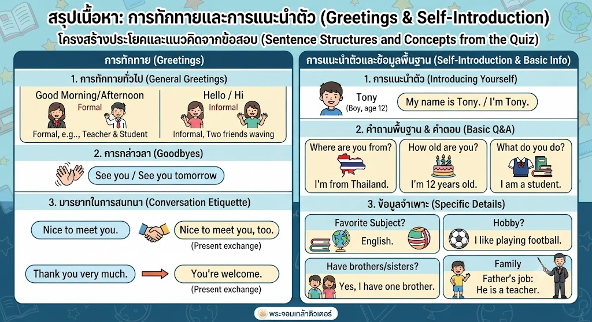

การสื่อสารเบื้องต้นคือหัวใจสำคัญของการเรียนภาษาอังกฤษ ใน Part นี้เราเน้นการใช้ประโยคที่พบบ่อยในชีวิตประจำวัน เช่น การทักทาย (Greetings) โดยใช้ Hello หรือ Hi ตามด้วยช่วงเวลา เช่น Good morning/afternoon นอกจากนี้ยังรวมถึงการแนะนำตัว (Introducing yourself) โดยใช้โครงสร้าง "My name is...", "I am..." หรือ "I'm..." รวมถึงการแลกเปลี่ยนข้อมูลพื้นฐาน เช่น อายุ (How old are you?), ภูมิลำเนา (Where are you from?), และงานอดิเรก (What is your hobby?)
เมื่อเจอข้อสอบสถานการณ์ (Situational Judgment):
เขียนโดย พระจอมเกล้าติวเตอร์